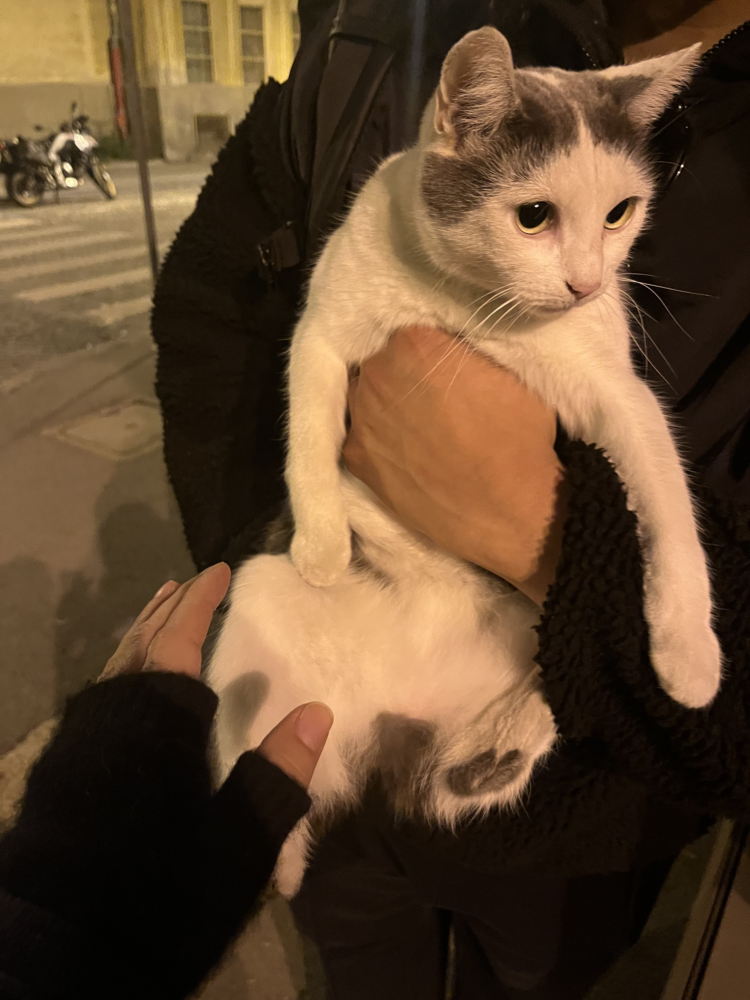
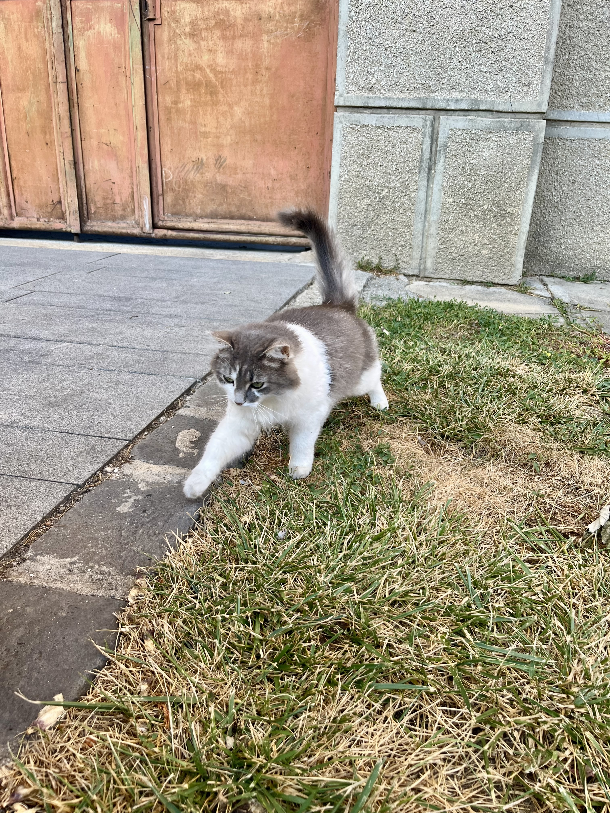
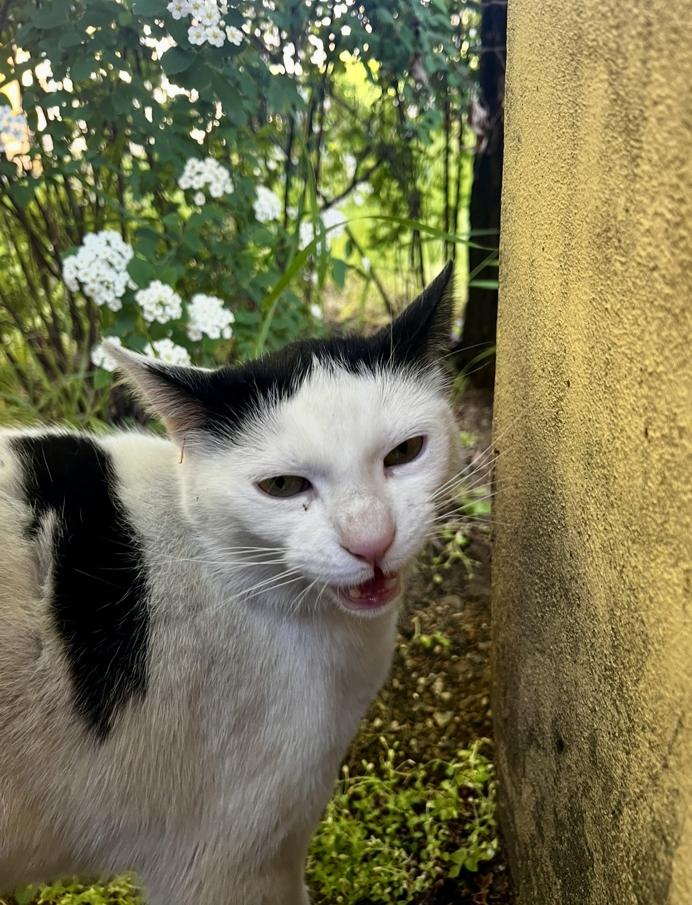

AI engineering · Product building
vEMPIRE
An AI powered Telegram bot for chatting, extracting insights from YouTube videos, and exploring audience comments.
- Python
- FastAPI
- AWS
- LLMs
AI Engineer · Data Science
I build things with AI, explore how learning systems work, and follow questions wherever they lead.
A little about me
I'm an AI Engineer who enjoys turning ideas into useful things. Alongside building AI powered applications, I'm exploring data science and learning deep learning by implementing concepts from scratch.
This site is a mix of work I'm proud of, things I'm learning, and little experiments I make just because I'm curious.
01 / Selected work
A few projects where I turn curiosity into something tangible.
AI engineering · Product building
An AI powered Telegram bot for chatting, extracting insights from YouTube videos, and exploring audience comments.
Deep learning · From scratch
Small implementations that help me understand neural networks and the ideas behind them, one concept at a time.
This is a living collection. I'll add more projects as they're ready to share.
02 / Playground
Small games, side projects, and experiments that start with “what if?”.

✦ First chapter playableExploration · Cosmic cats
A small adventure among the stars. Explore a mysterious moon, earn a stubborn cat’s trust, and find something to take on your next journey.
Play Le Petit ChatFree browser game · Keyboard & touch · In development
03 / Beyond work
I have a soft spot for cats, whether they're old friends or strangers I haven't met yet. I'm always happy to stop for a little cat time.


